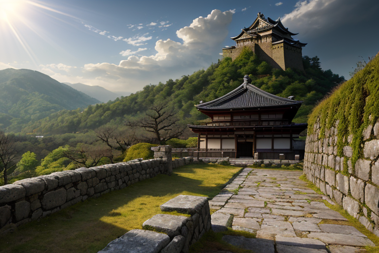
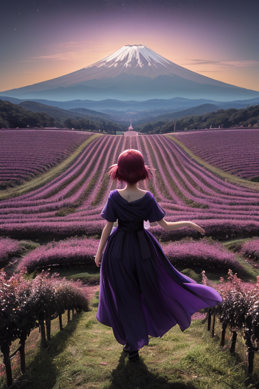
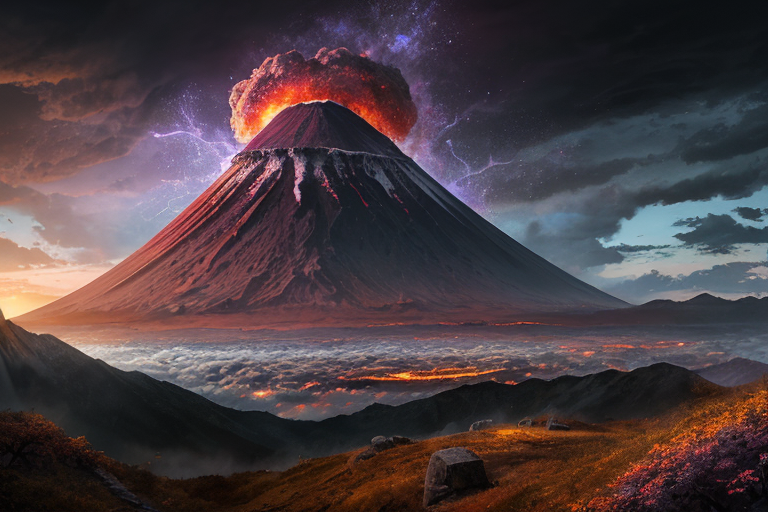
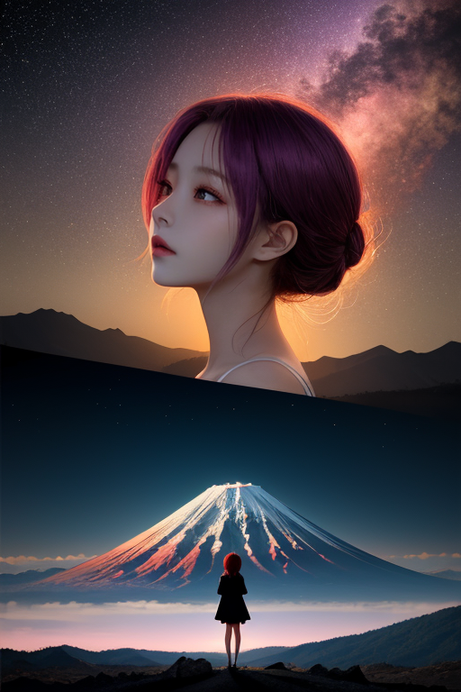
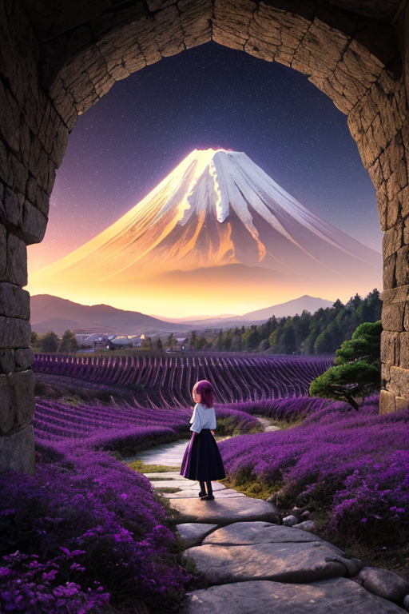

第一章 現実の山梨
あなたはまだ気づいていない。この土地にも、王がいることを。
甲府城の石垣は、武田菱の刻印が風化した跡を静かに抱いている。観光客のざわめきの向こうで、城はかつて「天下を取る」と高みを目指した男の夢の残滓を、冷たい石の肌で感じ続けていた。その夢は潰え、国は移り変わった。では、あの高みへの志向は何だったのか。ただの野望か、それとも。
石垣の最も陰になった隙間に、微かな紫の光が脈打つ。ヤマナリア・ルミナはここに立っていた。彼の目は、現在の賑わいではなく、地中深くに眠る「歪み」を見つめている。甲府盆地を形成する活断層の、ごくわずかな圧力の偏り。彼は感情を持たないはずだった。しかし、この地に流れる「高みを目指せ」という歴代の執念が、彼の内部に似たような「向上心」という名の軋みを生み出し始めていた。
彼は問う。己の中に芽生えたその想いに。高みを目指す理由は、何か。

第二章 歪みの兆候
甲府城跡の石垣に手を触れると、冷たい感触の奥から微かな振動が伝わってくる。それは観光客の足音ではなく、四百年前、武田信玄がこの地に刻んだ「高み」への意志が、地層を伝って現代にまで響く残響だった。領国経営、治水、軍制。あらゆる領域で頂点を目指したその執念は、土地の記憶として沈殿し、時に断層の活動に微妙な影響を与えていた。
妖精ルミナラが、ぶどう畑が広がる丘陵の上空で報告する。「峰王様、富士山直下のプレート境界に、想定外の圧力集中が検出されました。歴史的蓄積による『精神的歪み』の増幅が、物理的歪みと共鳴している可能性があります」
王は目を閉じる。視界には、信玄の目指した「天下」という高み、富士を仰ぐ信仰の高み、果樹を育てる農民の豊穣への高みが、幾重にも層を成して重なる。それら全てが「上へ」というベクトルを持つ。その一方向への過剰な集中が、地盤に無理な負荷をかけているのだ。
「なぜ、そこまで高みを目指すのか」
王の内側で、同じ問いが軋んだ。それは彼に与えられた使命の核心を揺るがす、危険な感情の萌芽だった。

第三章 王の葛藤
甲府城跡から見上げる富士は、この日、裾野に不気味な霞を纏っていた。地中を流れるマグマの圧が、通常の調整範囲を超えつつある。妖精たちの報告は緊迫していた。山梨の地は、信玄の天下取りの野望、富士登拝の信仰心、果樹栽培の飽くなき品質追求——幾重もの「高み志向」が蓄積した歪みで、静かに沸騰し始めていた。
「このままでは、大規模な火山性微動を抑えきれません」
ルミナラの声に、峰王は拳を握った。彼にできるのは、圧力を少し分散させ、活動のピークをわずかに遅らせることだけだ。根本的な解決——つまり、この地に巣食う「上へ上へ」という集団心理のベクトルそのものを変えること——は、王の職能を超えている。
「なぜ、止まれないのか」
彼は呟いた。かつて感情を持たなかった自分なら、淡々と調整を続けただろう。しかし今、彼は「理由」を問うてしまう。高みを目指す果てに、崩壊が待っているなら、その歩みを一時止めさせるべきなのか。それとも、たとえ危険でも、その志向そのものを守り抜くのが使命なのか。
紫と金の紋章が、彼の胸で重く輝いた。決断の時が、地鳴りのように近づいている。

第四章 妖精との対話
富士五湖の水面が、微かに不気味な輝きを帯びていた。地下を流れるマグマの圧が、記録的な高さに達している。峰王ヤマナリア・ルミナは、湖畔に佇み、その重い鼓動を掌で感じ取っていた。止めるべきか。このまま、山が目指す高み——噴火という変革——を見届けるべきか。
「王様、あなたは迷っていますね」
ふわりと、光の粒が集まり、主席妖精ルミナラが現れた。彼女の表情は、いつもの前向きな明るさではなく、深い覚悟に満ちていた。
「この圧力は、山の『成長』の痛みです。千年、二千年と蓄積した想いが、今、形になろうとしている。私たちはそれを止めることはできません。ただ……調整できるのは、その『形』だけです」
ルミナラは、眼下に広がる甲府盆地を見下ろした。武田信玄が夢見た国づくりも、ぶどうや桃の畑が広がる平和も、すべてこの山の恵みと脅威の上に成り立っている。
「高みを目指す理由？ それは……『現状』があるからです。この豊かさも、この平穏も、すべて過去の『変革』の果実。山が動かなければ、この土地は生まれなかった。私たちの役目は、その変革が、ただの破壊で終わらないように手を差し伸べること。たとえ、ほんの数秒、逃げる時間を生み出すことだけでも」
彼女の言葉は、優しさと厳しさが混ざり合っていた。王は、自らの理想主義が、いかに現実から浮いていたかを悟った。

第五章 微調整と余韻
富士五湖の水面は、突然の地鳴りに皺を寄せた。深部で岩盤が大きくずれ、想定を超える歪みが蓄積されていた。これは「調整」の域を超える。山梨全土に、震度７の衝撃が走ろうとしている。
「……できません」
ルミナラの声が震えた。全ての妖精の力を結集しても、これを一段階緩和することは不可能だ。
「できる」
ヤマナリア・ルミナは静かに言った。彼女の体から紫と金の光が迸る。王の星との契約を更新し、自らの存在を「調整器」そのものへと一時的に変える。代償は、この地で蓄えた全ての感情と、百年に渡る眠り。
「高みを目指す理由は、『守りたいもの』が、そこにあるからです」
光が地中に突き刺さる。岩盤の破断点が、ほんの数百メートル、東へずれた。震源は深く、揺れは震度６強に収まった。崩落は起きたが、多くの命が、ほんの数秒、いや数十秒の余裕を得た。
甲府城址の石垣の上で、彼女の身体は透明になり始めていた。最後に感じたのは、ぶどう畑の土の香りと、遠くに見える霊峰の穏やかな稜線だった。
あなたの町にも、王がいる。